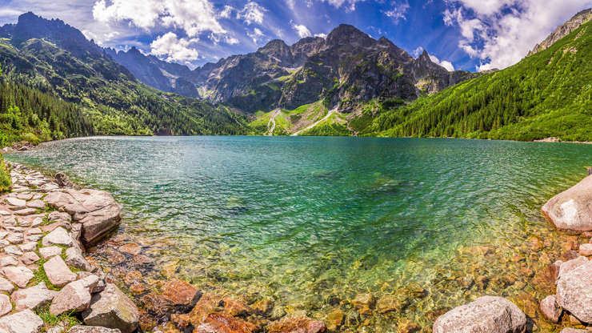
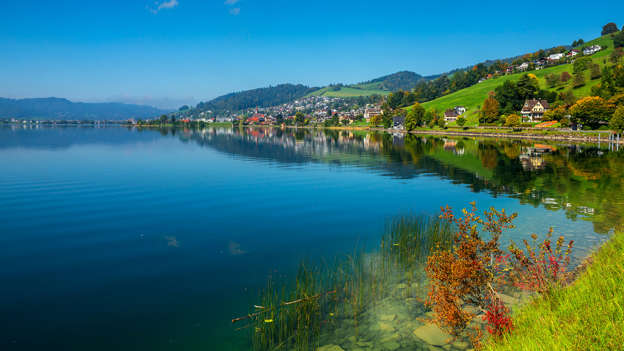

Río Mosela, Alemania

El pintoresco municipio de Beilstein ofrece una vista inolvidable del serpenteante río Mosela. Acercate a las ruinas del castillo de Metternich para disfrutar de vistas espectaculares y de la historia de Alemania.
Gatesgarthdale Beck, Inglaterra

Este pintoresco arroyo, que está en Cumbria, recorre el paso de montaña de Paso de Honister Pass y es una excelente opción para realizar un viaje largo y admirar el paisaje.
Acá también hay historia: la última mina de laja que funciona en Inglaterra se encuentra en la cima del paso y propone recorridos subterráneos ¿Otra muestra de curiosidades históricas? Se dice que el Paso de Honister ostenta el récord del Reino Unido de más cantidad de lluvia en un período de 24 horas (y, para esta parte del mundo, eso es decir mucho).
Puente de Ikema-Ohashi, Japón

El Ikema-Ohashi, que comunica las islas de Miyako-jima e Ikema, es el puente más largo de la prefectura de Okinawa, con una longitud de 1.425 metros. Si das un paseo un día despejado y soleado, te encontrarás con un tapiz de cielos azules, nubes blancas y un océano verde esmeralda. Solo tenés que recordar que es una carretera de un solo carril y que no se permite estacionar en el puente.
Morskie Oko, Polonia

El pintoresco cuerpo de agua, el lago más grande de los montes Tatra, se encuentra a 1.395 metros sobre el nivel del mar, al final de una ruta de senderismo de 8 kilómetros. Para evitar las multitudes, se recomienda comenzar el recorrido en el sendero a primera hora de la mañana.
Lago de Ägeri, Suiza

El paisaje del lago, situado en el cantón suizo de Zug, es la postal perfecta para pasear por la ruta de senderismo que lo rodea. Allí encontrarás rincones tranquilos para hacer picnic, así como lugares para nadar y hacer fogatas.
En el siglo XIV, las fuerzas más pequeñas de la Confederación Suiza derrotaron a los ejércitos invasores de Habsburgo en las reservas de este lago. De esta manera se formó una coalición que daría origen a la nación suiza.
Playa de la Bahía de Ao Nui, Tailandia

Esta playa, emplazada en Krabi, se caracteriza por su atractiva forma de U y sus impresionantes vistas al mar. Relajate en la arena blanca o sumergite en el agua cristalina. Ao Nui es la escapada perfecta para los viajeros que prefieren evitar las grandes multitudes.Sin embargo, esa popularidad trajo como consecuencia graves problemas ambientales. En junio de 2018, la playa de Bahía Maya, en la isla de Phi Phi Le (la misma playa de la película La playa) se clausuró indefinidamente para permitir que se recupere de los daños causados por años de turismo no regulado. Mientras tanto, los ecologistas se dedican a replantar corales naturales en la bahía.